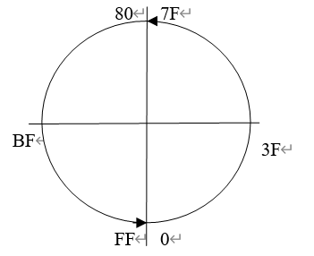

一.进制
1、 为什么要学习进制？
在我们生活中，一般不提进制的概念，默认用的就是10进制，计算机是不认识10进制的，计算机采用的是二进制，所以学习进制能帮助我们更好的去理解计算机是如何存储数据的。
2、 进制的定义
十进制的定义：由0到9 共10个符号组成，逢十进一
八进制的定义：由0到7八个符号组成 逢八进一
十六进制的定义：十六个符号组成， 分别是0 1 2 3 4 5 6 7 8 9 A B C D E F, 逢
十六进一
N进制的定义：由N个符号组成 逢N进一。
3、 计算机是如何存储数据的
计算机中，比如一部电影，一首歌，一张照片，最终都是以二进制的形式存储的。
计算机为什么采用二进制？
计算机是由许多电路组成的，电路只有两种状态，通电不通电。
所以大家一定对二进制非常熟悉。
二进制与16进制的对应关系（很重要，一定要记住！！！）
| 0000 | 0001 | 0010 | 0011 | 0100 | 0101 | 0110 | 0111 | 1000 | 1001 | 1010 | 1011 | 1100 | 1101 | 1110 | 1111 |
|---|---|---|---|---|---|---|---|---|---|---|---|---|---|---|---|
| 0 | 1 | 2 | 3 | 4 | 5 | 6 | 7 | 8 | 9 | A | B | C | D | E | F |
二.数据宽度
1.数据类型
数据宽度的定义：
数学上的数字是没有大小限制的，可以无穷大，也可以无穷小。计算机跟数学里的数字还是有差异的，因为硬件的限制所以计算机里存储的数据是没办法做到无限大的，大小是受限制的。
数据宽度的意义：
内存中存储了如下数据：
001110101001010010111001011101110001010000111010
可以把数据的宽度理解位容器的大小，它有多少位就代表能存储多少位的二进制数。
有符号数和无符号数：
概念：无符号数全表示正数，有符号数表示有正数有负数。
提示：以后我们在表示内存的数据时都会采用16进制，以后大家看到最高位大于等于8的数就能想到他是负数。（前提是有符号数，无符号写的多少就是多少。）
2.数据溢出:
所有的容器都是有一定的存储范围的，一旦超出存储范围，它就会从低位到高位存储，多余的舍弃
例如：用32位宽度的容器计算 FFFF FFFF+1=? 1 0000 0000最高位超出界限舍弃结果为0
3.进制的符号
十六进制符号用0x表示 例如0xFF 二进制用B表示 例如 10B
4.数据类型（容器种类）
字节 byte：数据宽度8位
字 WORD 数据宽度为16位
双字 DWORD 数据宽度为32位
四字 QWORD 数据宽度位64位。